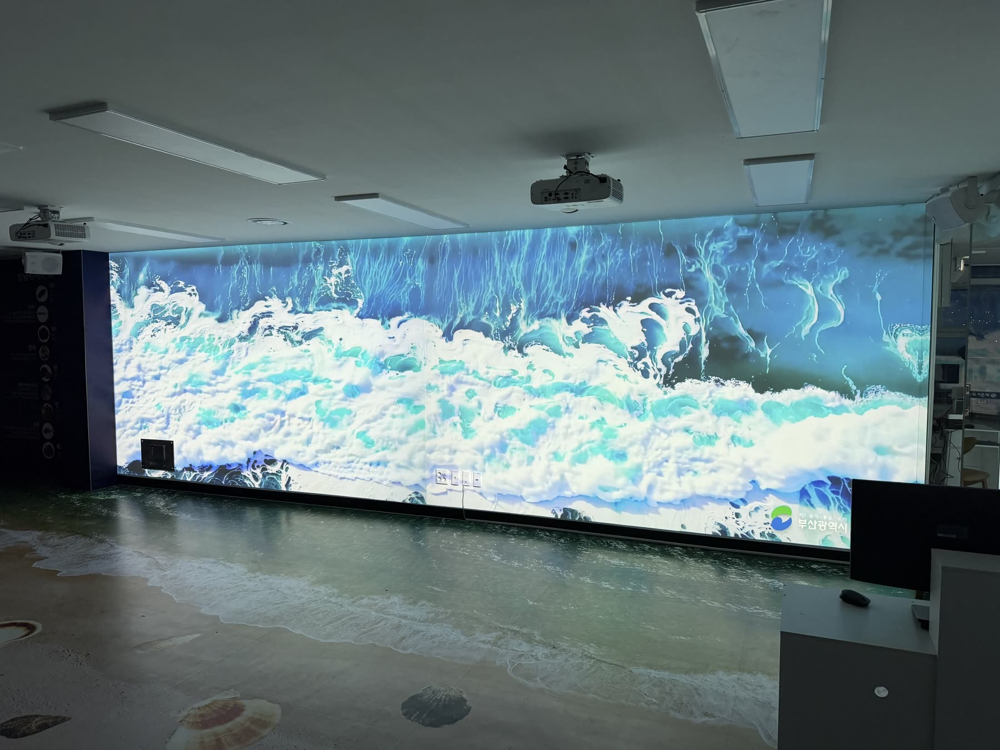
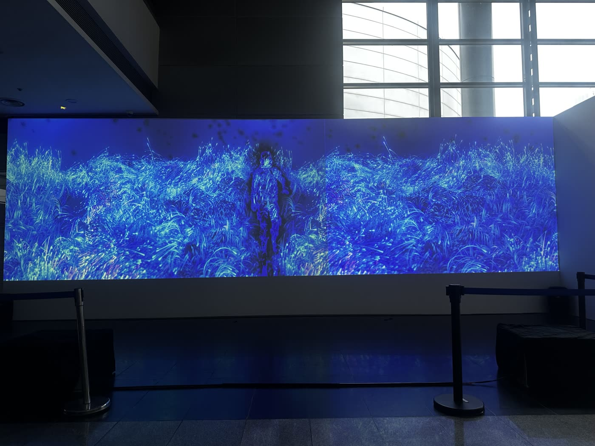
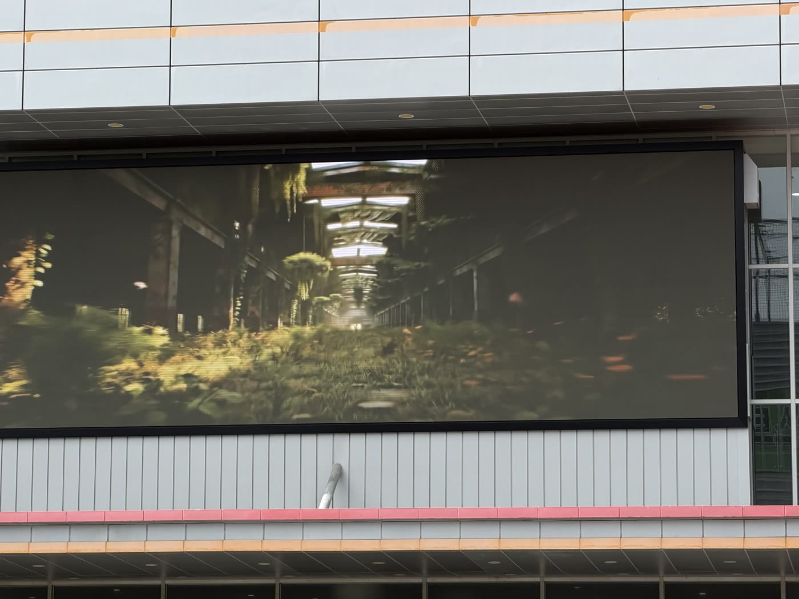
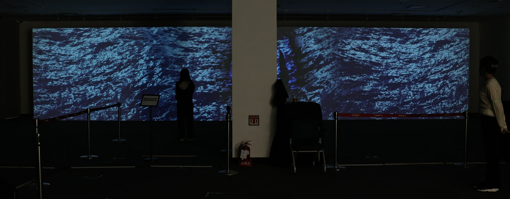
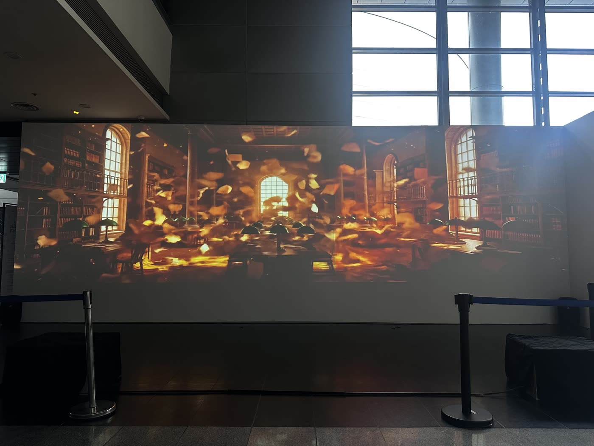

미디어파사드
건물 외벽·전시장 벽면 프로젝션. 현장 실측과 매핑, 프로젝터 배치, 야간 운영까지 포함합니다.
- 벽면 실측 · 프로젝션 매핑
- 축제 · 개관 · 전시 단기 운영
- 상시 상영 스케줄 관리
대구 실시간 정보를 불러오는 중
미디어파사드 · 미디어아트 · LED 패널
건물 외벽부터 로비 화면까지, 제작·설치·운영을 한 곳에서 합니다.
Selected Works
공공기관·문화시설 현장에 설치·상영한 작업입니다.







위 작업은 상상연필과 함께 수행한 현장 레퍼런스입니다. 오늘은 봄날 명의의 납품 실적은 대구 북구청 사이니지 미디어아트 3편이며, 입찰·수의계약용 실적증명서는 문의 시 별도로 보내드립니다.
What We Do
기획·제작만 하고 빠지지 않습니다. 설치와 이후 운영까지 같은 계약 안에 있습니다.
건물 외벽·전시장 벽면 프로젝션. 현장 실측과 매핑, 프로젝터 배치, 야간 운영까지 포함합니다.
로비 미디어월과 외벽 LED 패널. 패널 공급·설치부터 재생 장비, 콘텐츠 교체 운영까지 맡습니다.
기관이 가진 DB와 공공 API를 그대로 화면으로 만듭니다. 매번 새로 만들지 않아도 화면이 계속 달라집니다.
Live Public Data
공공 API에서 날씨와 대기질을 직접 받아 그립니다. 예시 영상이 아니라 지금 이 순간의 값입니다.


Inquiry Form
기관명, 사업영역, 예산 범위만 남겨주시면 검토 후 연락드립니다.